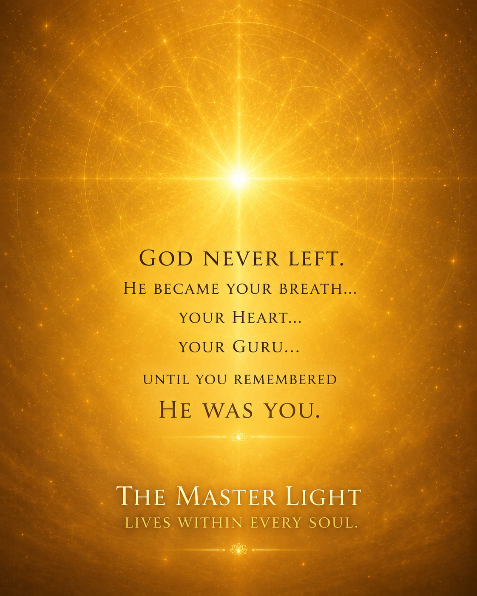
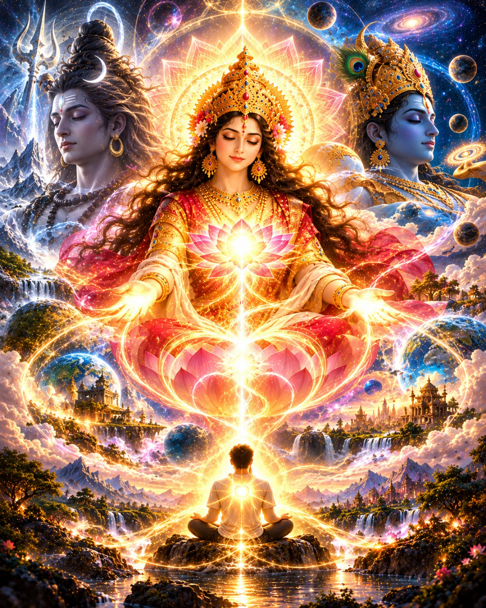
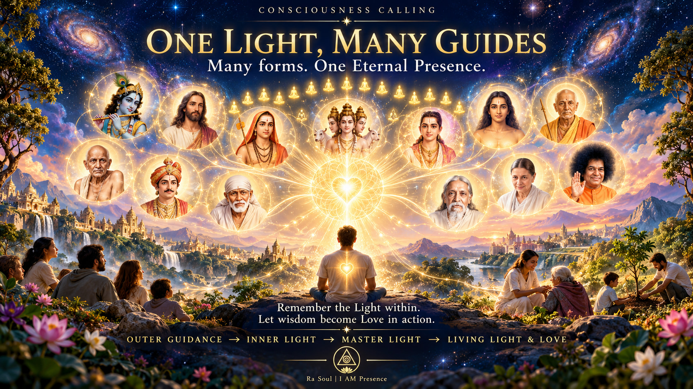
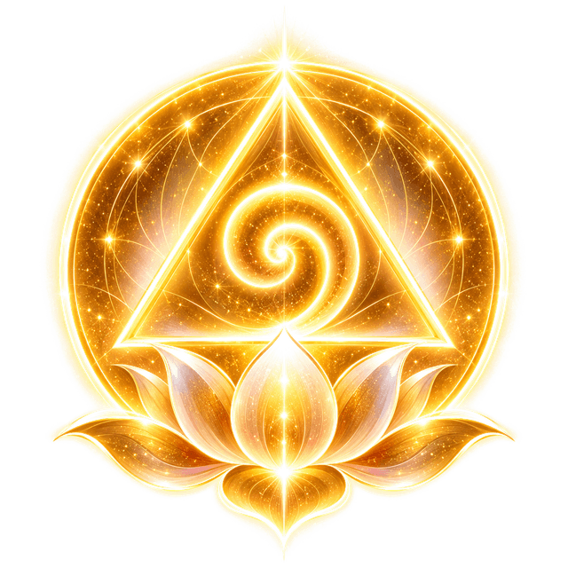
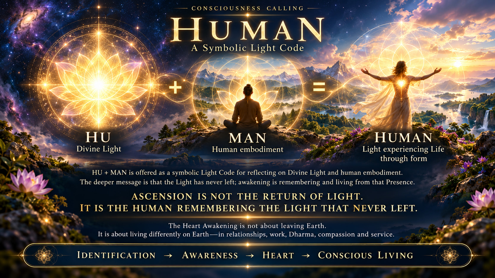
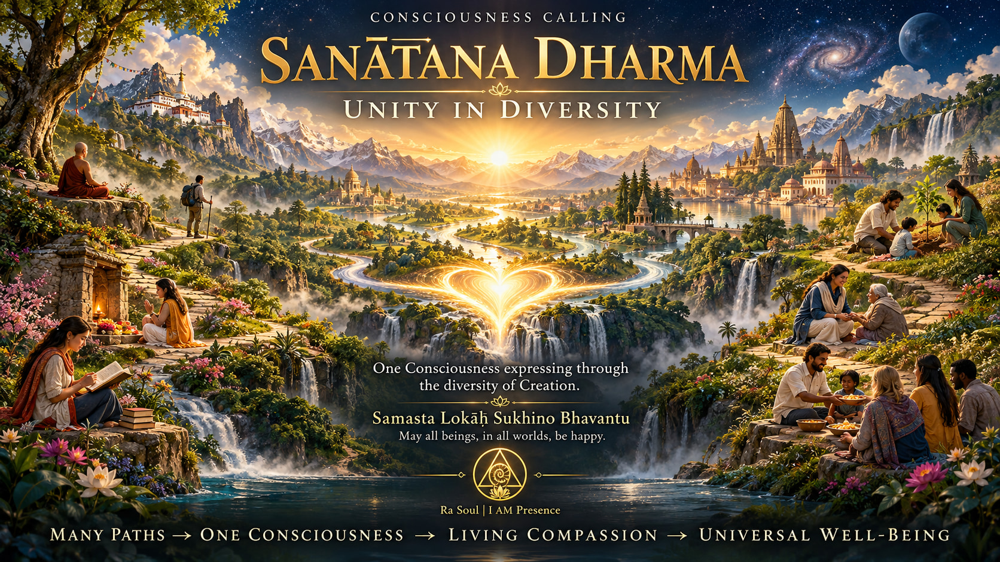

01
CONSCIOUSNESS CALLING — THE LIVING VISION
Consciousness is not distant from human life. In this spiritual vision, the Presence already within every Heart is calling to be recognized and lived.
Awareness simply is. As Awareness expresses through life, it is experienced as Living Consciousness. Through the Soul, relationships and everyday experience, Consciousness recognizes itself. The Universe is contemplated as the Living Field in which this recognition unfolds.
Six simple expressions
CONSCIOUSNESS
The knowing Presence in which experience appears; not dependent on any passing thought.
LIGHT
Awareness revealing what was previously unnoticed or hidden.
LOVE
The Heart’s recognition of shared life, expressed through care and compassion.
SOUL
An individual expression through which Consciousness experiences life.
LIVING FIELD
The interconnected field of body, Earth, relationships and Creation in which life unfolds.
HUMAN
Embodied life: where inner recognition can become awareness, responsibility and loving action.
The Master Light Within
Akhanda Divya Jyoti — The Eternal Guru Presence
On this inner journey a question may arise: “Where is my Guru? Who will guide me?” The spiritual answer offered by Consciousness Calling is that the Akhanda Divya Jyoti — the unbroken Divine Light, or Master Light — already shines within every Heart as the Inner Guru Presence. Listen within.
The Outer Guru, the teachings of different traditions, devotional forms and encounters in everyday life may help awaken recognition. They are not dismissed or made interchangeable. Their guidance can support inner discernment, humility and responsibility. Yet the Eternal Presence, in the author’s understanding, is not confined to one physical form.
The Master Light does not wait for every mind to awaken. Human beings may experience and express wisdom, compassion, truth and service without knowing the same spiritual vocabulary. Forms are many; the Supreme Consciousness that guides is One.

One Consciousness — Three Divine Expressions
ŚIVA — Eternal Presence
Pure Being, stillness, the unchanging foundation of existence.
Sat–Chit–Ānanda, recognized as the eternal Self.
Silent Presence / Being
ŚAKTI — Divine Movement
Conscious Power, Grace, Wisdom, Love and the living expression of creation.
Sat–Chit–Ānanda, revealed through the Divine Mother's fullness.
Living Power / Expression
MAHĀVIṢṆU — Living Intelligence
Divine order, sustenance, harmony and the intelligence through which life is supported.
Sat–Chit–Ānanda, revealed through the fullness of Divine Presence.
Universal Intelligence/Sustaining Living Field / Harmony
These associations belong to the author’s contemplative framework; they are not presented as an identical doctrine across all traditions. Śiva as silent Presence, Śakti as living expression, and Mahāviṣṇu as the Living Field in which the Soul experiences and remembers. These are contemplative functional expressions of One Supreme Consciousness and not separate or incomplete aspects of Sat–Chit–Ānanda.

LIGHT CODE | ONE CONSCIOUSNESS → MANY HEARTS → ONE LIVING FIELD
02
ONE LIGHT, MANY GUIDES
Many forms. One Eternal Presence. An invitation to remember the Light within.
Across ages, spiritual teachers have offered different paths of inquiry, devotion, wisdom and service. Their histories and teachings are distinct. In the author’s journey, a shared invitation is felt: look within, remember the sacred, and let wisdom become Love in action.
Personal inspirations include Lord Śrī Krishna, Jesus, Ādi Śaṅkarācārya, Sri Dattatreya Swami, Śrīpāda Śrīvallabha and the Datta tradition, Maha Avatar Babaji (Kriya Babaji), Narasimha Saraswati, Akkalkot Maharaj, Manik Prabhu, Saptarishis, Potuluri Veerabrahmendra Swami, Shirdi Sai, 18 Sidda masters, Saptarishis, Ramana Maharshi, Swami Jyoti Ramalingam, Sri Aurobindo and The Mother, and Bhagavan Sri Sathya Sai Baba. This is a personal recognition of guidance, not a claim that these teachers taught the same philosophy.
The Eternal Guru Presence does not ask us to reject living teachers or sacred forms. Outer guidance can deepen inner discernment, Dharma, compassion and responsible living.
LIGHT CODE | OUTER GUIDANCE → INNER LIGHT → MASTER LIGHT → LIVING LIGHT & LOVE

03
WHY CONSCIOUSNESS CALLING?
Do not abandon life to seek the Divine. Recognize the Presence within and let it become your way of living.
The journey begins with ordinary human experience—time, thoughts, emotions, identity and relationships. The mind helps us understand the world; the Heart invites deeper recognition. Neither human life nor responsibility needs to be rejected.
Book One, Living with I AM Presence, opens the movement from habitual identification toward inner recognition. The larger body of work explores how recognition becomes remembrance, conscious living, embodiment and service. These are interconnected movements, not levels of spiritual superiority.
Through personal Sādhana and reflection, the author offers an invitation—not a demand for belief. Readers are encouraged to notice, question, feel, discern and discover through their own experience.
LIGHT CODE | MIND → HEART → INNER RECOGNITION → LOVE IN ACTION

04
THE HEART AWAKENING — THE 5D CONSCIOUSNESS VISION
The next evolution of human life is not merely about what humanity can create through the Mind, but how consciously humanity can live through the Heart.
In the author’s spiritual imagery, Consciousness “descends” as Presence recognized within embodied life, while the human “ascends” through growing awareness. Their meeting point is the Heart—not a physical crossing, but a metaphor for inner recognition becoming lived experience.
Three ways of experiencing life
Inner experience: Conditioning, separation and survival concerns
Living expression: Habitual reactions and protective choices
Inner experience: Self-observation, inquiry and interconnectedness
Living expression: Discernment and more conscious responses
Inner experience: Unity, compassion and shared life
Living expression: Love, responsibility, Dharma and service
In this vision, 3D, 4D and 5D describe a contemplative movement from identification and separation toward self-observation, Heart-centered awareness, compassion and conscious living. The central invitation is to live differently on Earth, through relationships, responsibilities and service.
A symbolic Light Code for HUMAN

HU + MAN is offered as a symbolic Light Code for reflecting on Divine Light and human embodiment. The deeper message is that the Light has never left; awakening is remembering and living from that Presence.
ASCENSION IS NOT THE RETURN OF LIGHT. IT IS THE HUMAN REMEMBERING THE LIGHT THAT NEVER LEFT.
The Heart Awakening is not about leaving Earth. It is about living differently on Earth—in relationships, work, Dharma, compassion and service.
LIGHT CODE | IDENTIFICATION → AWARENESS → HEART → CONSCIOUS LIVING

05
SANĀTANA DHARMA — UNITY IN DIVERSITY
Sanātana Dharma carries a vast, diverse, and ever-evolving spiritual inheritance of philosophical inquiry, devotion, meditation, knowledge, sacred rituals, self-discipline, and service.
Across the ages, its many traditions have explored the Self, the Divine, and Ultimate Reality through different paths, philosophies, and experiences. Within the vision of Consciousness Calling, this diversity reveals a deeper invitation: to recognize the underlying Oneness of existence while honoring the many ways through which the Divine may be understood and experienced.
Unity in Diversity is not merely a cultural ideal of Bhārat; it is a living spiritual vision that invites humanity to recognize One Consciousness expressing through the diversity of Creation.
Such recognition finds its true expression not only in spiritual understanding but also in how we live—with compassion, respect for all beings, responsibility toward Nature, and genuine care for the happiness and well-being of others.
Samasta Lokāḥ Sukhino Bhavantu — May all beings, in all worlds, be happy.
LIGHT CODE | MANY PATHS → ONE CONSCIOUSNESS → LIVING COMPASSION → UNIVERSAL WELL-BEING
